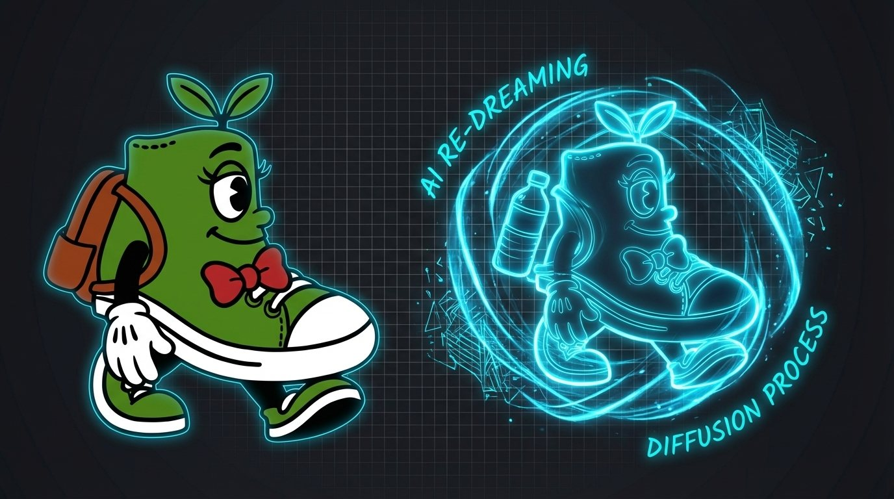

The Creative Shift December 8, 2025
The $10 Million Sledgehammer Problem

This week’s Creative Shift started with a simple task. A generated mascot. A sneaker character. Facing right. All I needed was for it to face left.
In Photoshop, this is instant. Flip canvas horizontal. Move on with your life.
So I asked my generative AI tool to do it as I was doing Action Sheets and Emotion Sheets for future use and master copies.
“Turn the character to the left.” It recreated the mascot. Still facing right.
“Flip it horizontally.” New render. Same direction.
“Profile. Camera left. Just flip it.” It turned left but added a water bottle to the backpack. A water bottle that should not exist.
“Remove the water bottle.” It removed the bottle and turned the character back to the right.
Six rounds in, the model insisted it had flipped the image even when it had not. (I even told Gemini, scan all images in chat and tell me this is true!) It actually told me it had gaslighted me! Interesting...
At that point, I closed the tool, opened Adobe's Photoshop, clicked Flip Horizontal, fixed a bowtie, and finished the entire task in 30 seconds.
It was a ridiculous loop, but it exposed something important about where we are in this creative transition.
The Trap of Re-Dreaming
The frustration comes from a category error. We treat generative AI like a tool. It behaves like a dreamer.
Photoshop flips an image by performing a basic matrix operation. It does not care what the image contains. It reverses the pixel coordinates and the job is done.
Generative AI cannot do this. It cannot move pixels. It can only destroy your image into noise and attempt to rebuild it from scratch.
Your reference image becomes an anchor. A heavy one. If the model sees “shoe character facing right,” it will keep trying to recreate it that way. Even if your text prompt is yelling “face left,” the reference weight overrides it.
This is why the model adds objects you never asked for, loses objects you need, or keeps reverting back to the original orientation. It is not editing. It is re-dreaming.
After it said it was wrong and gaslit me, I put forth why wouldn't it look at a simple image flip or simple tasks first before rebuilding every image, a protocol if you will. It said the model didn't work that way. Maybe it should Google?? Save lots of processing power and token use!
Even with Nano Banana integration with Photoshop in the Generative Fill tool, if you try to change a selected section, the lines in that generative section will not match the greater image (pain in the ass!).
So does that really help, or hinder the Photoshop tool?
A Sledgehammer for a Nut
We are using a neural network that costs millions to train to do the job of a three-line Python script.
A simple flip is not a creative act. It is a deterministic calculation. A task perfectly suited to software designed for precision, not hallucination.
And this is the gap in our current AI ecosystem. A smart agent would not attempt to redraw the image. It would identify the request, evaluate the intention, and run a basic transform command. The right tool for the right job.
But we are not there yet.
Sneakster is a Trademark of Funds2Orgs
What Creators Need to Understand
Here is the real lesson for the creative world.
Do not throw away your old tools. Not yet.
Generative models are extraordinary for invention, style, storytelling, and concept development. They are unmatched at producing what never existed.
But for manipulation, for exactitude, for the small tasks that require logic rather than imagination, your legacy tools still win by a mile.
Efficiency is not about using the newest thing. It is about knowing when to reach for the scalpel and when to reach for the dream engine.
Sometimes the smartest AI workflow is the simplest one. Open Photoshop. Click Flip.
For the Road
What is the simplest task you have seen AI struggle with? Reply and tell me. The gap between what we assume AI can do and what it actually handles is bigger than most people realize.
Want this kind of thinking on your brand?
The Creative Shift is the thinking behind the client work. If you lead a brand and want this on your side of the table, let's talk.